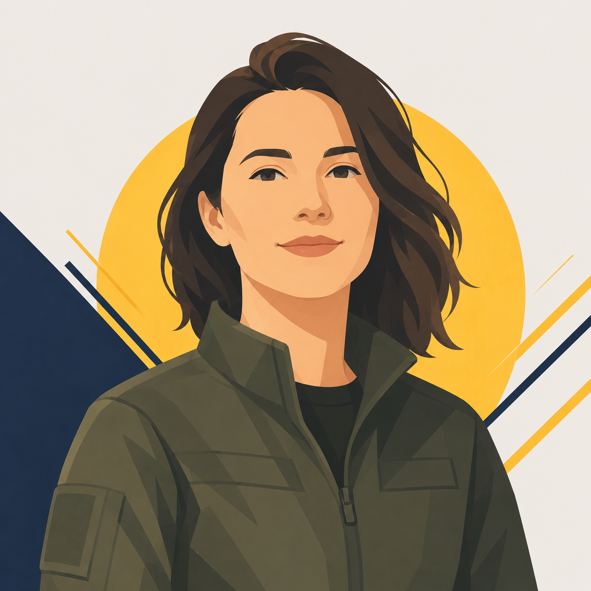
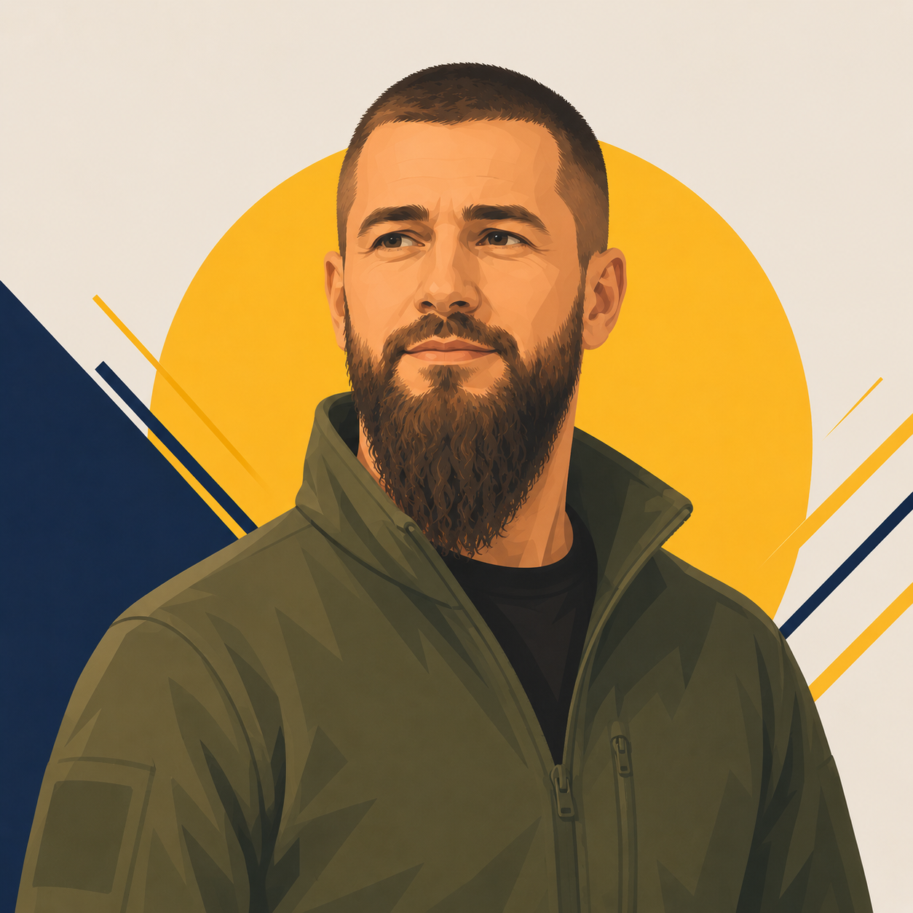
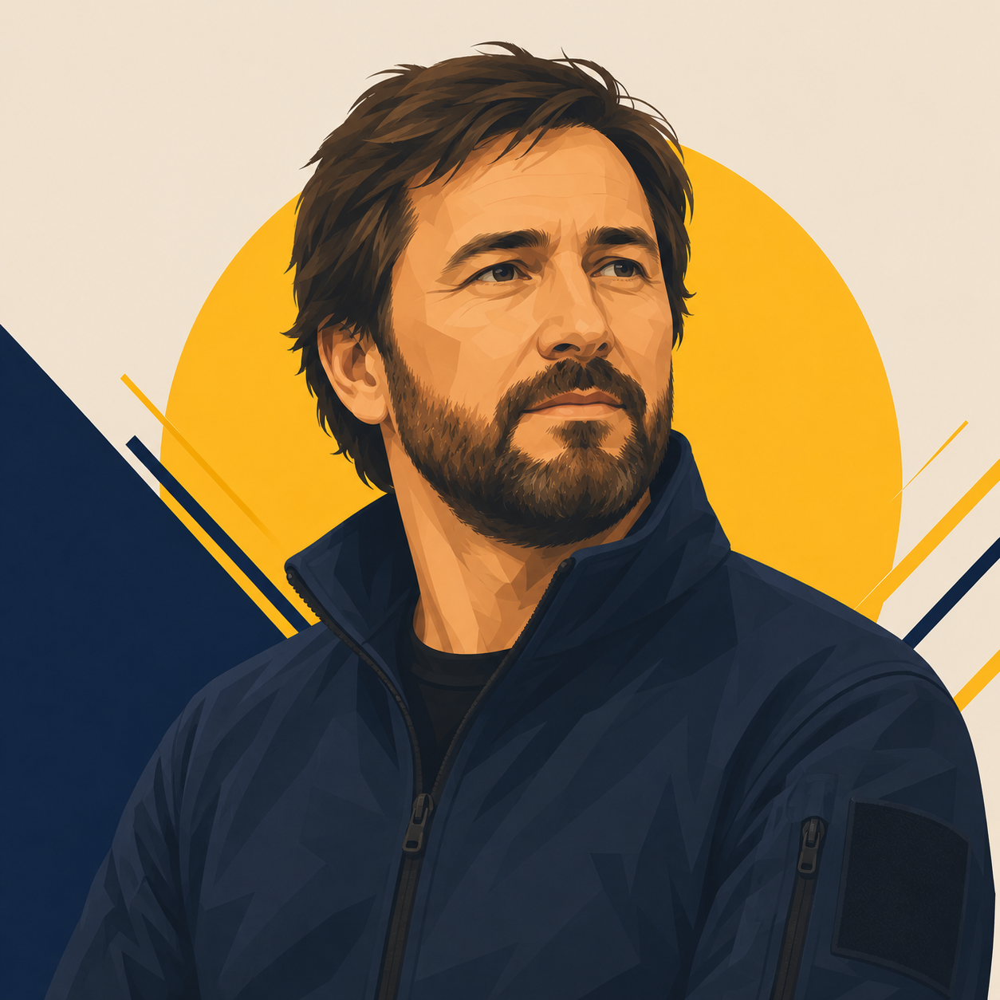

Навіщо це все — і чому саме зараз
Кожен учасник прийшов до проєкту з власною причиною — але всі зводяться до одного: дітям потрібні навички, сенс і впевненість. А країні потрібні люди, які не бояться.

Крістіна
Голова ГО
Дрон — не зброя, а ціла наука. Головне — розуміння, як це працює: від радіозв'язку до хімії акумуляторів. Пілотування — це лише 5–10%.
«Зацікавити дітей наукою — навпаки, замість дурних блогерів і спранків».

Юрій «Недок»
Ініціатор проєкту
Мріяв про табір виживання для дітей — відірвати від соцмереж, показати реальне життя. Війна показала можливості дронів — і рішення прийшло: спочатку гурток, потім табір.
«В житті треба щось зробити, щоб щось мати. І бажано це робити головою».

Валентин
UI/UX, організація
Популяризувати безпілотні системи, тактичну підготовку, такмед — надважливо для країни, яка нікуди не дінеться від військової загрози. Розвивати навички обороноздатності — не опція, а необхідність.
«Ця загроза існуватиме рівно стільки, скільки існуватиме сама Україна».

«Тихий»
Ветеран
Науковий прогрес не стоїть на місці — не треба чекати, коли з'явиться геній. Треба прискорити процес: створити середовище, де діти думають колективно і вирішують проблеми.
«Дрончик — це пріоритетна ціль. Це дуже, дуже важлива професія».